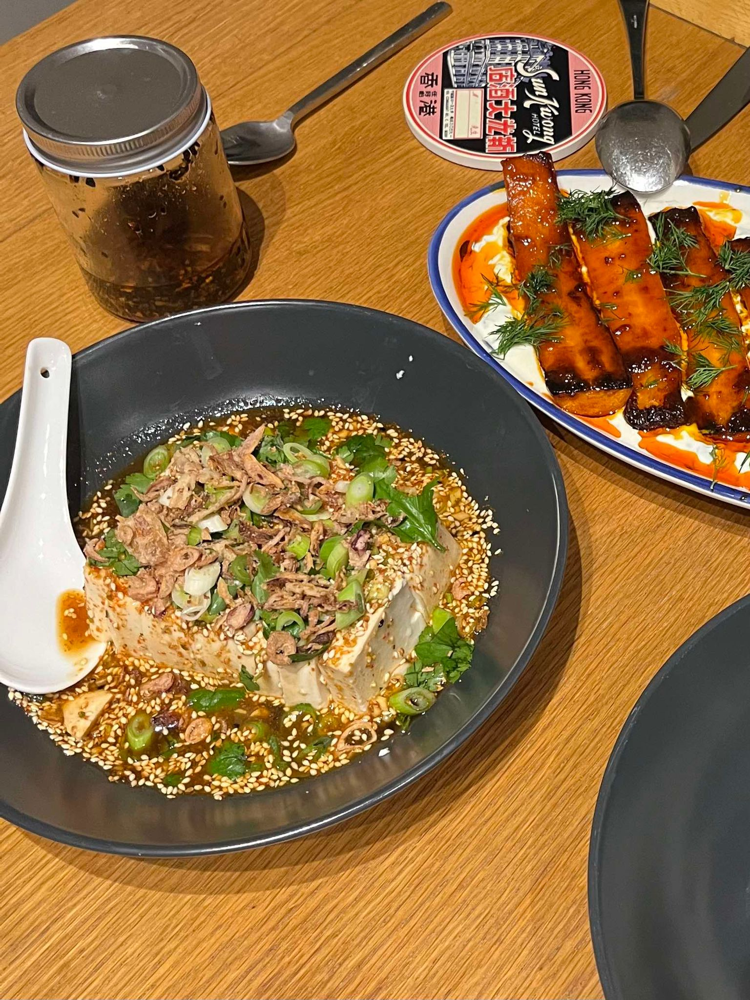

This recipe serves 4. The dressing can be prepared up to 3 days ahead and kept refrigerated. From there it is 5 minutes to get this on the table.
Put the sesame seeds into a small frying pan and place on a low heat. Toast for about 6 minutes, shaking the pan regularly, until light golden brown. Transfer to a pestle and mortar and then add the sugar and pound until coarsely ground. Place in a medium bowl and add all the remaining ingredients except for the tofu (and the garnishes). Stir to combine.
Ease the tofu out of its container and onto a large, shallow serving bowl, then cut into large, flat, rectangular, pieces or dice. Spoon over the sauce and garnish with the spring onion, corriander, chilli and crispy-fried shallots.
